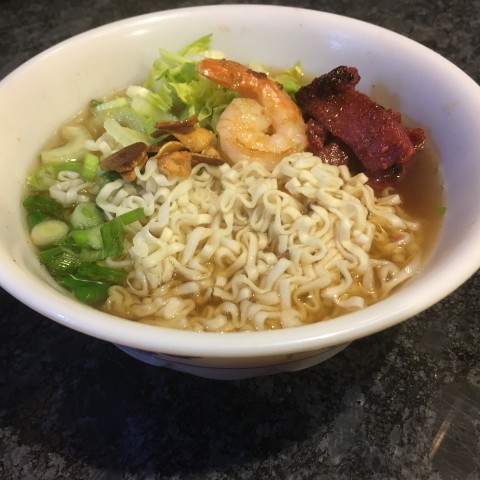
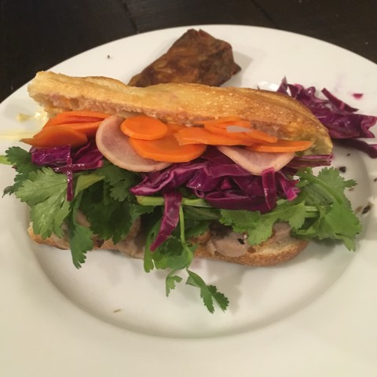
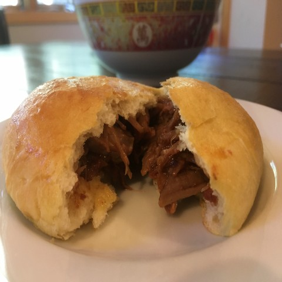
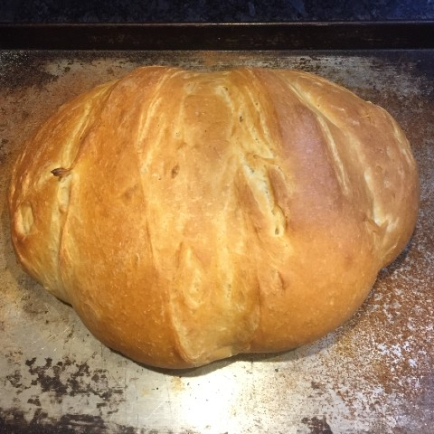
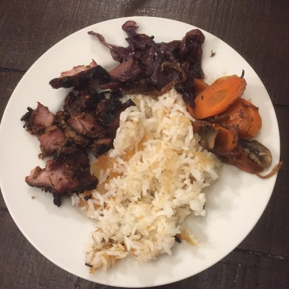
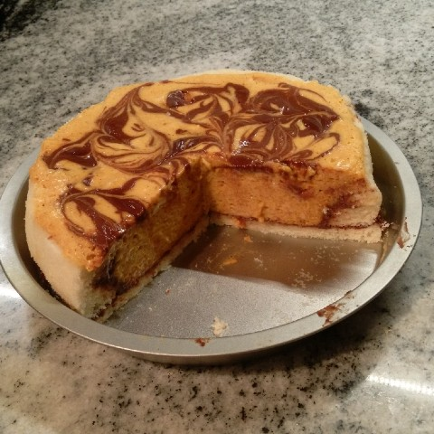
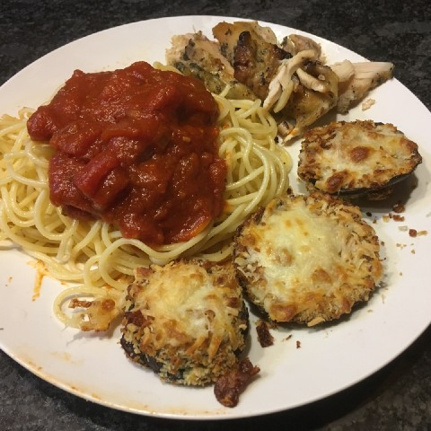

A Cookbook
Intro
The Recipes
Vietnamese
Soups
Bun bo hue
Hu tieu
Pho
Noodles and Rice
Bot chien
Banh
Banh Xeo
Banh Mi
Meats
Lemongrass pork
Extras
Special fish sauce
Other Asian
Chinese
Ma po tofu
Ginger fish
Smashed cucumber salad
BBQ Pork Buns
Egg drop soup
Japanese
Korean
Bibimbap with crispy rice
Thai
Other Savory Dishes
American
Falafel burgers
Hot chicken
Hot chicken-fried tofu
Corn Chowder
Air-fried “fish and chips”
Butternut squash mac and cheese
Indian
Saag paneer
European
Moussaka
Middle Eastern and African
Latin American
Papusas
Picadillo
Breads and Desserts
Bread
Crusty bread
Mira’s Biscuits (and gravy)
0.0.1
Snail Rolls {.unnumbered #snail rolls}
Japanese milk bread (for filled buns)
Monkey bread
French breakfast puffs
Desserts
Creamy cheesecake
Rhubarb pie
Pumpkin mousse cake
Delightful Leftovers
Lettuce soup
References
Published with bookdown
InspiRed Home Cooking
The Recipes
Bot chien
Bun bo hue

Hu Tieu
Banh Xeo

Banh Mi
Falafel Burger
Saag Paneer

BBQ pork buns
Hot Chicken
Hot-chicken-fried tofu

Crusty bread
Moussaka

Crispy Rice
Ginger Fish

Pumpkin Mousse Cake
Snail Rolls
Creamy Cheesecake
Corn Chowder
Butternut Squash Mac and Cheese
Air-fried Fish and Chips
Biscuits and Gravy
Waffles

Eggplant Parmesan
Tatamen Spicy Ramen
Papusas
Picadillo